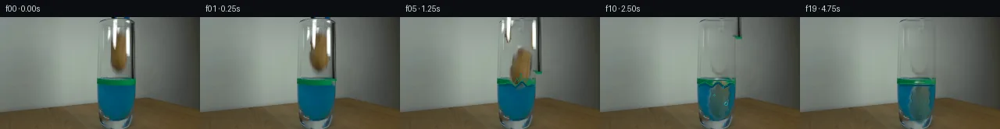

![首帧]()

Round 00
2026-11-05T09:48:12.069037+00:00像素候选变化代码 +368/−0inspection 更新
pixels 1fd3e49c98dd3b52 · code df251f4b4ca784fc
查看本轮 generate.py 真实 diff
--- previous/generate.py +++ current/generate.py @@ -0,0 +1,368 @@ +#!/usr/bin/env python3 +"""Generate a deterministic 20-frame continuation from first_frame.png. + +The source image is treated as a measured pixel plate. The moving parts are +separated with coordinate/color masks, the small concealed area is rebuilt +from its immediate row neighbors, and the release/water response is animated +with local raster operations. No external assets or models are used. +""" + +from pathlib import Path +import hashlib + +import cv2 +import numpy as np +from PIL import Image, ImageDraw, ImageFont + +import artifact_io + + +ROOT = Path(__file__).resolve().parent +W, H = 256, 144 + + +def polygon_mask(points, blur=0.0): + mask = np.zeros((H, W), np.uint8) + cv2.fillPoly(mask, [np.asarray(points, np.int32)], 255) + if blur: + mask = cv2.GaussianBlur(mask, (0, 0), blur) + return mask.astype(np.float32) / 255.0 + + +def alpha_over(dst, src, alpha): + """Alpha composite float RGB src over float RGB dst.""" + a = np.clip(alpha, 0.0, 1.0)[..., None] + return dst * (1.0 - a) + src * a + + +def warp_layer(rgb, alpha, dx, dy, angle=0.0, center=(153.0, 46.0)): + mat = cv2.getRotationMatrix2D(center, angle, 1.0) + mat[:, 2] += (dx, dy) + out_rgb = cv2.warpAffine( + rgb, mat, (W, H), flags=cv2.INTER_LINEAR, + borderMode=cv2.BORDER_CONSTANT, borderValue=(0, 0, 0) + ) + out_a = cv2.warpAffine( + alpha, mat, (W, H), flags=cv2.INTER_LINEAR, + borderMode=cv2.BORDER_CONSTANT, borderValue=0 + ) + return out_rgb, np.clip(out_a, 0.0, 1.0) + + +def build_clean_plate(src): + """Reconstruct only the narrow zone initially hidden by tool/potato.""" + plate = src.astype(np.float32).copy() + # The backdrop here is smooth. Rowwise interpolation from immediately + # outside the object is less destructive than a wide generic inpaint. + x0, x1 = 135, 174 + left = np.median(src[:, 129:134].astype(np.float32), axis=1) + right = np.median(src[:, 177:182].astype(np.float32), axis=1) + interp = np.zeros_like(plate) + interp[:] = plate + for x in range(x0, x1 + 1): + u = (x - x0) / (x1 - x0) + interp[:, x] = left * (1.0 - u) + right * u + + potato_area = polygon_mask([ + (148, 18), (158, 19), (164, 25), (166, 39), (165, 55), + (160, 67), (154, 72), (148, 70), (142, 63), (139, 51), + (140, 36), (143, 27) + ], 1.3) + left_tool_area = polygon_mask([ + (137, 0), (153, 0), (153, 18), (151, 36), (148, 50), + (139, 50), (137, 29) + ], 1.5) + right_tool_area = polygon_mask([ + (158, 0), (173, 0), (173, 80), (164, 80), (161, 51), + (159, 30) + ], 1.5) + replace = np.maximum.reduce([potato_area, left_tool_area, right_tool_area]) + # Do not replace the glass/liquid broadly. Beneath y=77, only remove the + # three-pixel dark shaft using neighboring liquid colors. + replace[78:] = 0.0 + plate = alpha_over(plate, interp, replace) + + liquid_shaft = np.zeros((H, W), np.uint8) + liquid_shaft[77:89, 166:173] = 255 + liquid_shaft = cv2.GaussianBlur(liquid_shaft, (0, 0), 0.8) … diff truncated; 281 more lines …